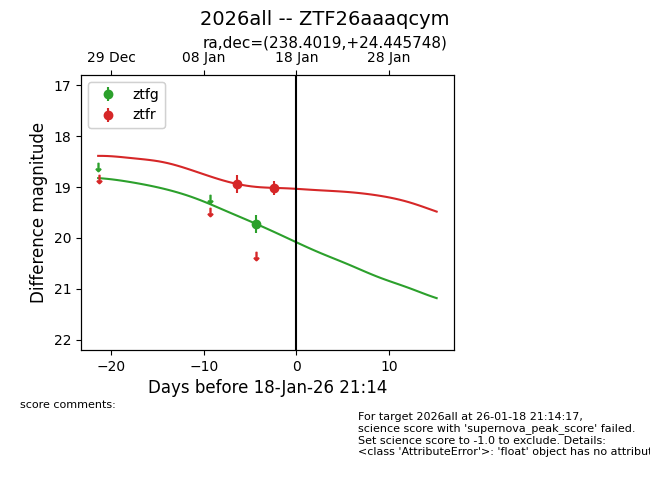
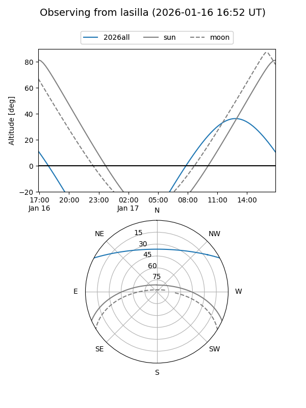
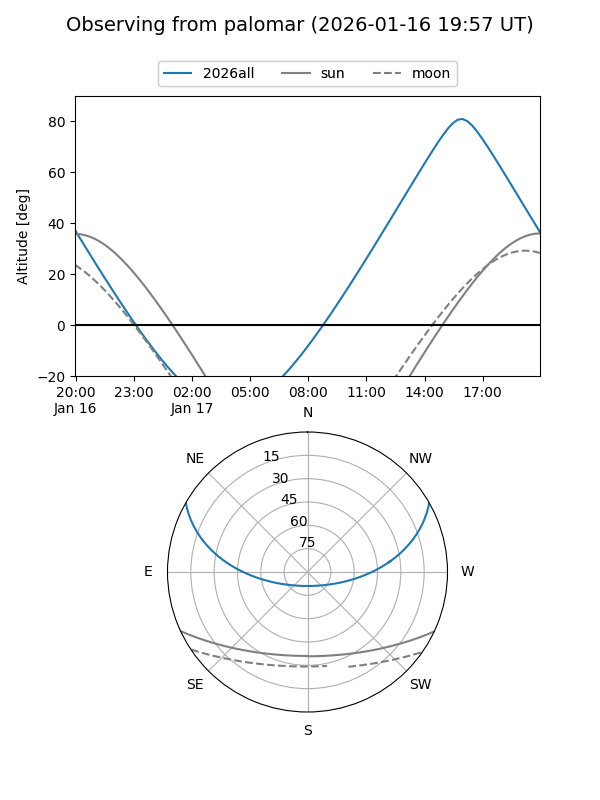

2026all
Target 2026all at 2026-01-17 07:05
Aliases and brokers:
FINK: link
Lasair: link
ALeRCE: link
TNS: link
YSE: link
alt names
ZTF26aaaqcym (ztf,fink_ztf)
2026all (tns,yse)
Coordinates:
equatorial (ra, dec) = 238.4019,+24.44575
equatorial (HMS+DMS) = 15:53:36.45,+24:26:44.69
galactic (l, b) = (39.7398,+49.12611)
Flags:
Photometry:
last ztfg=19.72, ztfr=19.02
1 ztfg, 2 ztfr detections
Lightcurve

Visibility


Additional plots